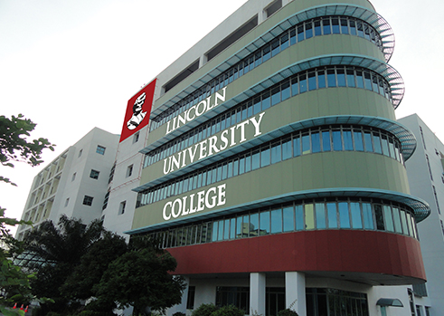
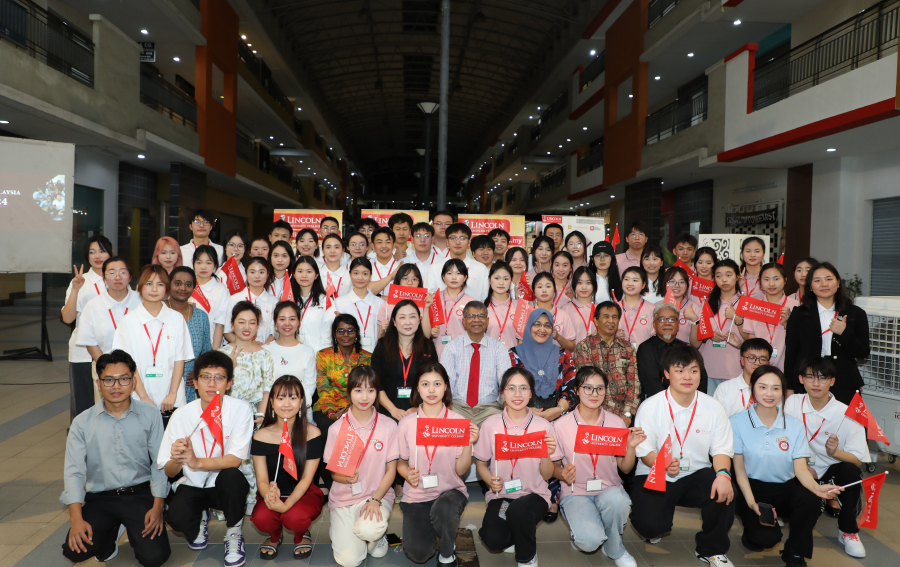
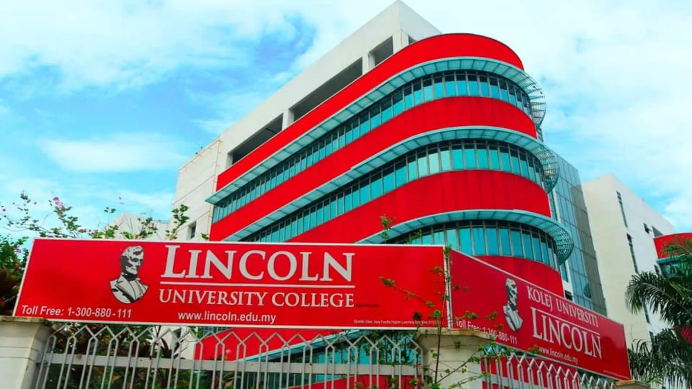

About Lincoln University College
Founded in 2002 as Lincoln College and upgraded to university college status in 2011, Lincoln University College (LUC) is a premier private higher education institution situated in Petaling Jaya, Selangor. LUC is dedicated to providing high-quality tertiary education with a strong emphasis on clinical training, professional practice, research, and career-focused innovation.
LUC is fully accredited by the Malaysian Qualifications Agency (MQA) and approved by the Ministry of Higher Education (MOHE). The university has achieved a 5-Star SETARA rating and holds ISO 9001:2015 certification. Globally recognized, LUC is ranked #638 in the QS World University Rankings, #185 in the QS Asia University Rankings, and #87 in THE Impact Rankings, maintaining active academic affiliations with the Association of Commonwealth Universities (ACU) and International Association of Universities (IAU).
Campus Life

Lincoln Campus

Students & Faculty

Lincoln Campus
Campus & Facilities
Lincoln University College operates main urban campuses in Petaling Jaya and Kelana Jaya, Selangor, supplemented by specialized clinical training facilities in Kota Bharu. Designed to support rigorous academic and professional practical training, the campus features state-of-the-art medical simulation centers, specialized laboratories, modern digital libraries, and comfortable student lifestyle facilities.
- High-Fidelity Medical Simulation Wards & Anatomy Museums
- Advanced Pharmacy Practice, Clinical & Biotechnology Research Labs
- AI Computing Studios & Multimedia Development Labs
- Digital Library & Comprehensive E-Resource Learning Centre
- Interactive Smart Classrooms & High-Capacity Auditoriums
- Condo-Style Student Housing with Modern Amenities
- Sports & Recreational Complex (Gymnasium & Pool)
- Multi-Cuisine Cafeterias & Social Student Lounges
- Dedicated Shuttle Transport Services to MRT/LRT Stations